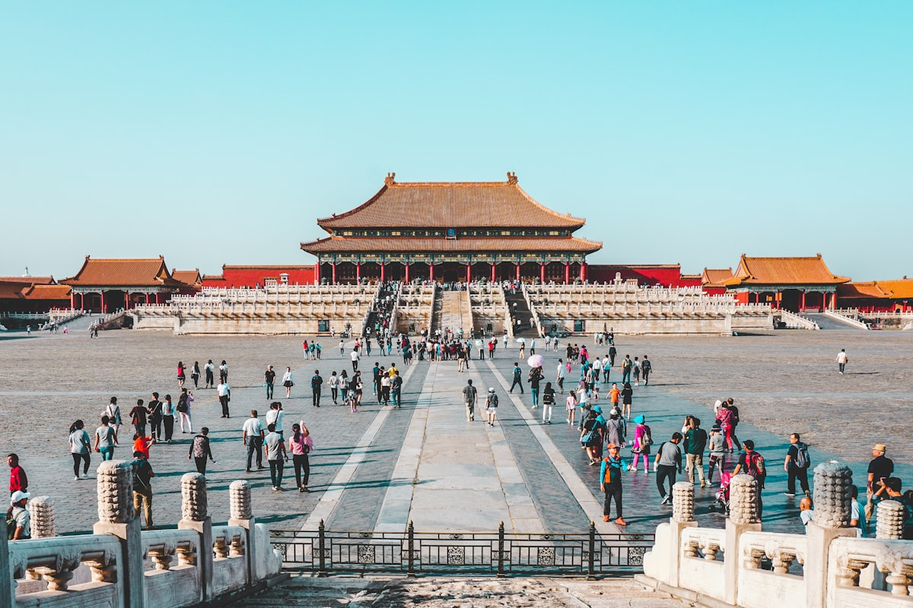

Overview

The Great Wall of China is the longest architectural project in human history, stretching over 21,000 kilometers across northern China. Construction began in the 7th century BC, with the most famous sections built during the Ming Dynasty (1368–1644). The Badaling section, located 70 km northwest of Beijing, is the most visited and best-preserved part of the Wall.
The Wall was never a single continuous structure — it consists of multiple walls built by different dynasties, connected and reinforced over centuries. Its primary purpose was defense against northern nomadic tribes, but it also served as a trade regulation barrier along the Silk Road and a communication network with its system of watchtowers and signal fires.
🇯🇵 Japanese Connection
The Great Wall has been a symbol of wonder in Japan for centuries. In Japanese, it is called "万里の長城" (Banri no Chōjō) — "The Long Wall of Ten Thousand Li." Many Japanese schoolchildren learn about it as one of humanity's greatest achievements, and it consistently ranks as the #1 destination Japanese tourists want to visit in China.
The Badaling Section
Badaling is the most accessible and popular section of the Great Wall, offering stunning views and well-preserved architecture. It was the first section opened to tourists (in 1957) and has hosted over 500 state leaders from around the world.
What Makes Badaling Special
- Accessibility: Cable cars and gentle slopes make it suitable for all fitness levels
- Preservation: Fully restored Ming Dynasty walls averaging 7.8 meters high and 5.8 meters wide
- Views: Panoramic mountain vistas stretching to the horizon — especially breathtaking in autumn
- Facilities: Museum, cinema, restaurants, and souvenir shops at the base
Other Notable Sections
Mutianyu (慕田峪)
90 km from Beijing. Less crowded than Badaling with beautiful forest scenery. Features a fun toboggan slide down the mountain. A favorite among international visitors.
Jinshanling (金山岭)
130 km from Beijing. A photographer's paradise with a mix of restored and wild wall sections. The 10 km hike to Simatai offers the most dramatic landscapes.
Jiankou (箭扣)
For adventurous hikers only. This unrestored "wild wall" clings to dramatic cliffs and offers the most authentic experience — but requires proper hiking gear and caution.


Practical Information
Opening Hours (Badaling)
- Peak season (Apr–Oct): 6:30 – 19:00
- Off-peak (Nov–Mar): 7:30 – 18:00
Tickets
- Peak season: ¥40
- Off-peak: ¥35
- Cable car (round trip): ¥140
Getting There
From Beijing, take the high-speed train from Qinghe Railway Station to Badalingchangcheng Station (only 20 minutes). Alternatively, buses 877 depart from Deshengmen station.
Tips for Japanese Visitors
- Visit early morning (before 9 AM) or late afternoon for fewer crowds and better photos
- Wear sturdy shoes — the steps are steep and uneven
- Bring water and snacks; limited options on the Wall itself
- Autumn (September–November) offers the most spectacular scenery with colorful foliage
- Winter visits are magical with snow-covered walls, but dress very warmly
- The "You are not a hero until you've climbed the Great Wall" certificate makes a great souvenir!